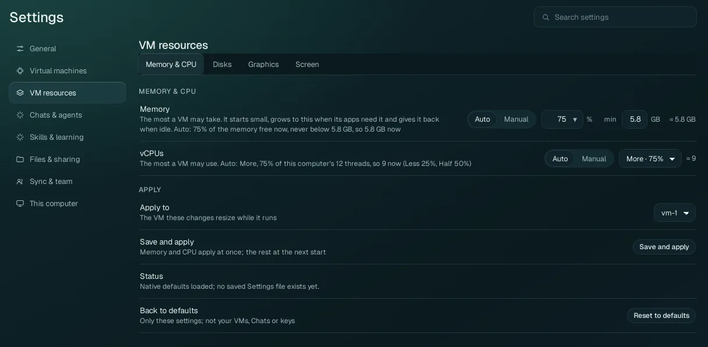
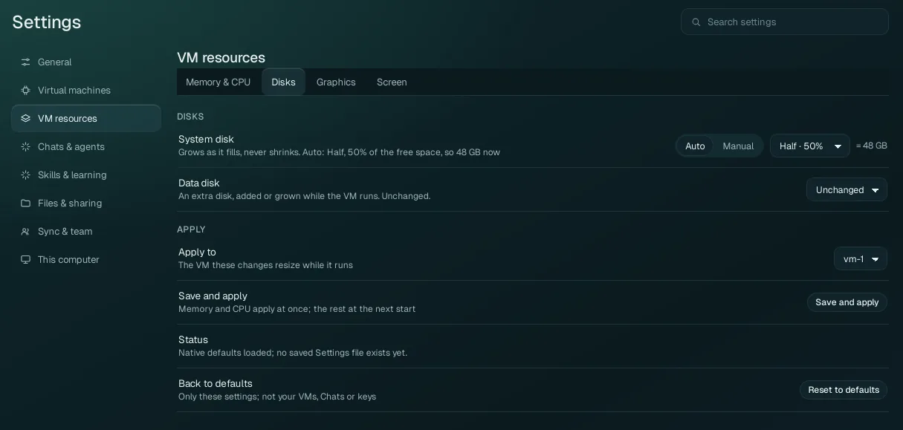
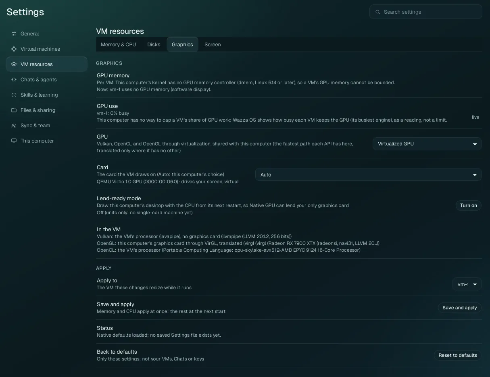
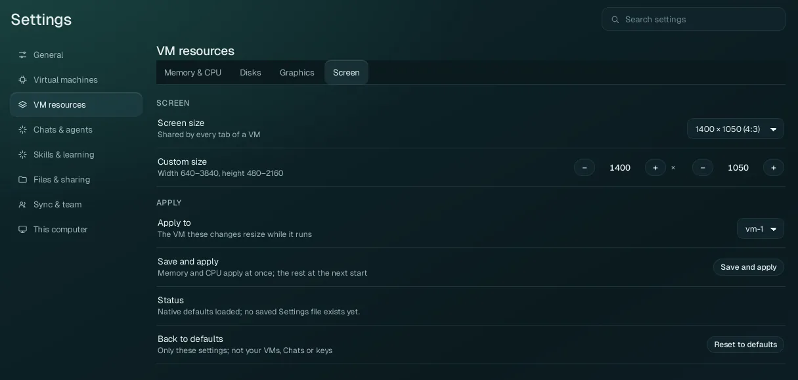

Settings › VM resources
How much of your computer a VM may use (memory, processors, disk, graphics card) and the size of its screen. Every value here is a limit, not a reservation: a VM starts small, grows up to the limit when its apps need it, and gives back what it does not use.
The defaults suit almost every computer: memory up to 75 % of what is free (never below 8 GB when your computer has it), processors up to 75 % of your computer's, a disk that grows into half of your free disk space, your graphics card shared with the VM. Change them only for a reason (a laptop that must stay responsive, a large render). Memory, CPU and disk explains the behaviour behind them.
How this page saves#
This page does not use the Apply bar of the other pages. Its own footer, under every tab:
| Control | What it does |
|---|---|
| Apply to | The VM whose memory and processors are changed while it runs (vm-1, or another running VM). |
| Save and apply | Saves every value of this page. Memory and vCPUs apply at once to the VM chosen in Apply to, while it runs; disks, graphics and the screen size apply at the VM's next start. Save never restarts a VM by itself. |
| Restart the VM now | Shows after a save that has something waiting for the next start: restarts the VM so it applies now. Apps running in the VM end; save your work first. |
| Status | What happened last: Native defaults loaded; no saved Settings file exists yet on a new installation, then what was saved and applied, or why a value was refused (shown in red). |
| Reset to defaults | Memory, vCPUs and disks back to Auto, graphics and the launch options back to their defaults. Only these settings: your VMs, Chats and keys are not touched. |
Memory & CPU#

Memory#
The most memory (RAM) one VM may take. The VM starts with what its desktop needs, takes more when its apps need it (the line under the row says how much it may take now), and gives it back when idle, so a high limit costs your computer nothing until it is used.
| Choice | Fields | What it means |
|---|---|---|
| Auto (default) | A percentage: pick 25, 35, 50 or 75 in the list, or type any whole
number from 10 to 100. Default 75 %. min: a minimum in GB, default 8 GB. | The limit is that percentage of the memory free on your computer now (counting the memory Wazza OS's own VMs already hold), split between the running VMs. It follows your computer: when other programs take memory, the limit goes down. It is never below the minimum when your computer has that much memory in total (minus 2 GB kept for your computer itself). The = … GB on the right is the result now. |
| Manual | A fixed value, picked from the list. | The limit is that value whatever is free. Pick it when you want a predictable size. |
Wazza OS also keeps 10 % of your computer's memory free at all times: when your computer runs short, the VM stops growing and a notice says so (for example Wazza OS keeps 10% of this computer's memory free; the VM stays at 3 GB). See Memory, CPU and disk.
vCPUs#
The most processors (threads) one VM may use. A VM boots with 2 and gets more while its programs wait for CPU.
| Choice | Fields | What it means |
|---|---|---|
| Auto (default) | Less · 25 %, Half · 50 %, More · 75 % (default) | That share of your computer's hardware threads (the row says how many: "75 % of this computer's 12 threads, so 9 now"). |
| Manual | A number, picked from the list | Exactly that many at most. |
Disks#

| Option | Values | What it does |
|---|---|---|
| System disk | Auto: Less · 25 %, Half · 50 % (default), More · 75 % of
the free space on the drive that holds the VMs' disks. Manual: a size in GB (at least 8). | The size the VM's main disk (its system, apps and files) may grow to. It takes space on your drive only as it fills, and never shrinks: deleting files in the VM does not give the space back to your computer. A larger value applies at the VM's next start; a smaller one never cuts an existing disk. |
| Data disk | Unchanged (default: no data disk), or a size to add or grow to (up to 1024 GB) | An extra disk for the VM, added or grown while the VM runs (for large projects, media libraries, datasets). |
To see how much space a VM's disk takes now: the VM's row in Virtual machines (disk 2.1 GB), or This computer › Usage.
Graphics#

| Option | Values | What it does |
|---|---|---|
| GPU | Virtualized GPU (default) Native GPU (passthrough, experimental) None (CPU only) |
Virtualized: the VM's apps draw on your graphics card through virtualization, shared with your computer: Vulkan, OpenCL and OpenGL each take the fastest path they have here, translated only where there is no other. Native GPU: one of your graphics cards is lent to the running VM: its apps use it directly (CUDA, HIP, Vulkan, OpenCL, OpenGL at full speed), and your computer cannot use that card while it is lent; only on computers that pass its check (see Native GPU below). None: the VM draws with its processors only (slower; for computers without a usable graphics card). Applies at the VM's next start. |
| Card | Auto (default: your computer's choice), or one of your cards by name and address | The card the VM draws on. Each card shows its role (drives your screen, can drive your screen). With two identical cards, their addresses tell them apart. Under Native GPU, a card that cannot be lent says why. |
| More cards | (Native GPU, computers with several cards) one switch per card | Lend these cards to the VM too (up to 8). A card that cannot be lent says why. |
| Native GPU | (shown with Native GPU) Allow lending a card, Check again | The line says whether this computer can lend the chosen card and what to do first: the programs to close that use it, a one-time setup that Allow lending a card makes (it asks for your administrator password), and, when your screen's cable is plugged into a port of the card that will be lent, where to move it so your screen keeps working. Check again reads it again. |
| Lend-ready mode | Off (default) / Turn on | Only for a computer with one graphics card that also draws its desktop: from your computer's next restart, its desktop is drawn by the processor, so Native GPU can lend your only card to the VM. Turn it off again to get your card back for your desktop (again from the next restart). |
| GPU memory | Auto: a percentage (default 50 %) of the graphics memory free now, per VM; Manual: a value in GB | The most graphics memory one VM may hold. Shown only where your computer can bound it (Linux 6.14 or newer, with its GPU memory controller); elsewhere the row says it cannot be bounded and shows what each VM holds now. |
| GPU use | A reading (live) | How busy each running VM keeps the graphics card (its busiest engine), as a reading: your computer has no way to cap a VM's share of GPU work. |
| In the VM | A reading | The path each graphics programming interface takes in the VM now, in plain words: Vulkan, OpenGL and OpenCL, each on your card or on the VM's processors. Shown once the VM runs. |
Which apps need what, and how to check that an app uses your card: Desktop apps and the GPU.
Screen#

| Option | Values | What it does |
|---|---|---|
| Screen size | 1024 × 768 (4:3), 1280 × 720 (16:9), 1280 × 800 (16:10), 1366 × 768 (16:9), 1400 × 1050 (4:3) (default), 1440 × 900 (16:10), 1600 × 900 (16:9), 1900 × 1080, 1920 × 1080 (16:9), Custom | The size of the VM's own screen, shared by every tab of the VM (each tab shows the app on it, scaled to the space the tab gives it). A larger screen gives apps more room and takes more memory and bandwidth to draw. |
| Custom size | Width 640–3840, height 480–2160 | Any size in that range (pick Custom above, or type: the list follows). |
Developer options#
A hidden section for developers (shown only in developer mode): video memory, the virtualization accelerator (auto, kvm, tcg), the VM's VNC display number, user networking, the API provider, the Pro app account line, and a folder of your computer shared into the VM. You never need them; the command line and the MCP reach them.
From the command line#
The same values, for scripts (see The command line):
$ wazza --gui vm-resources
$ wazza --gui vm-memory auto 50 --min 8192
$ wazza --gui vm-disk set 80
$ wazza --gui gpu mode virtualized